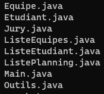

Une SAE relié à d'autre SAE, celle-ci consisté à la réalisation de fichier java qui permet la lecture de différents data, du traitement de ses informations afin de crée un emploie du temps.
Durant cette SAE, nous étions en groupe de 4. Je n'ai donc pas crée les classes Elèves et Groupe (même si j'ai apporté quelque
modifications par ci par la), j'ai principalement travailler sur le corp de cette SAE (lecture, traitement et autre des fichiers)
mais j'ai aussi fait la génération d'une des pages WEB.
J'ai donc quand même fait une bonne partie du travail.
Les fichiers data n'était pas très complexe à lire et les informations entré était assurer d'être juste.
Dans l'avenir, je sais que ce genre de donnée deveront être corriger pour éviter certain bug, mais pour l'instant, ce n'est
pas quelque choses sur lequel nous nous sommes penchés.
La lecture et enregistrement des données une fois fait, il était maintenant temps de les traités. Cette partie à était possible grace à la réalisation de multiple classe java : un total de 8 classes.
Pour voir le code en entier, n'hésitez pas à aller sur répértoire git TP-SNCF.